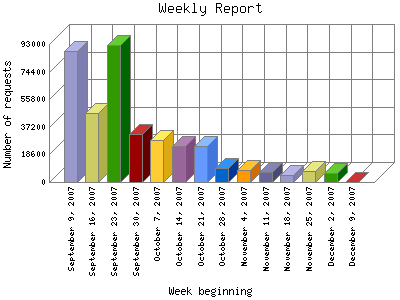

Analog 5.24
Analog 5.24 Report Magic for Analog 2.13
Report Magic for Analog 2.13The Weekly Report identifies the activity for each week within the report
time frame. Remember that one page hit can result in several server requests
as the images for each page are loaded.
Note: Depending on the
report time frame for this report the first and last week may not represent
a full seven day week, resulting in lower hits.

| Week beginning | Number of requests | Percentage of the requests | |
|---|---|---|---|
| 1. | December 9, 2007 | 237 | 0.7% |
| 2. | December 2, 2007 | 6,178 | 1.63% |
| 3. | November 25, 2007 | 7,466 | 1.98% |
| 4. | November 18, 2007 | 5,054 | 1.33% |
| 5. | November 11, 2007 | 6,619 | 1.74% |
| 6. | November 4, 2007 | 8,184 | 2.17% |
| 7. | October 28, 2007 | 9,504 | 2.51% |
| 8. | October 21, 2007 | 24,118 | 6.38% |
| 9. | October 14, 2007 | 23,953 | 6.32% |
| 10. | October 7, 2007 | 28,517 | 7.53% |
| 11. | September 30, 2007 | 32,360 | 8.54% |
| 12. | September 23, 2007 | 92,071 | 24.32% |
| 13. | September 16, 2007 | 46,277 | 12.22% |
| 14. | September 9, 2007 | 88,017 | 23.26% |
Most active week beginning September 23, 2007 : 92,071 requests handled.
Weekly average: 27039 requests handled.
This report was generated on December 9, 2007 02:23.
Report time frame September 9, 2007 05:00 to December 9, 2007 05:55.
| Web statistics report produced by: | |
| Analog 5.24 | Report Magic for Analog 2.13 |